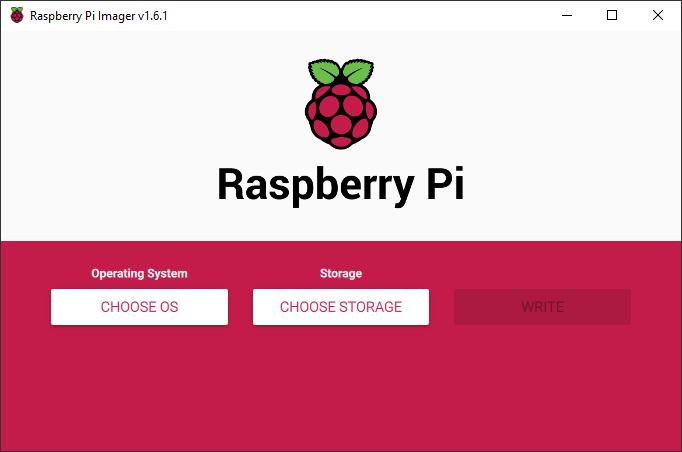

Prepare the SD Card¶
Download and install the Raspberry Pi Imager, insert the SD-Card and start the Imager.

It's recommended to use the Raspberry Pi Imager Advanced Options to do some basic setup. Just press Ctrl+Shift+X on startscreen to access advanced options. In newer Raspberry Pi Imager versions you just need to press the gear symbol.
Setup a hostname, enable SSH, either password based or using public-key authentication (recommended!), configure your Wi-Fi credentials and choose the correct locale for Wi-Fi, timezone and keyboard layout. You can also skip the first-run wizard.
If you set the default username to anything different than "pi" (which is recommended) you'll need to replace "pi" in the following documentation with your username.
For example: instead of connecting to ssh pi@hostname you'll need ssh username@hostname.
How to generate a public key
Generate SSH-Keys for password-less connection. On your desktop computer open a command-line terminal (CMD or Powershell on Windows or a bash on Linux) and run
ssh-keygen
to generate a public private key combination. Add the private key to your ssh-agent (you may need to update OpenSSH on Windows).

Now insert the SD card into your PC. Select Raspberry Pi OS Lite (32-bit) as operating system under "Raspberry Pi (Other)". Then select the SD card on which the operating system will be installed.
Warning
It is possible to select not only the SD card, but also the hard drive or SSD where your operating system or other PC data is stored. Make sure that you really select the right SD card. Most of the time, you can tell by the size.
Press the Write button and wait until the Raspberry Pi Imager has completely written and verified your SD card.
Tip
Sometimes the verification may fail. Try another USB port on your PC or another card reader. If this does not help, maybe the SD card is broken.
Setup without Raspberry Pi Imager
-
Add an empty file named
sshto the boot partition to enable ssh on first boot. -
Add your Wi-Fi credentials as described in the Raspberry Pi Documentation
-
Connect to the pi using ssh (
ssh pi@raspberry)to the Pi using password authentication.Create and edit the needed
authorized_keysfile.mkdir -p ~/.ssh nano ~/.ssh/authorized_keysCopy your public key on the host and paste it on the pi, save&close using Ctrl+X - Enter - Y.
Next steps¶
You're now ready to boot your Raspberry Pi to install OTCamera. You can either do it by using our Quick Installer or follwing all steps on the next sites.